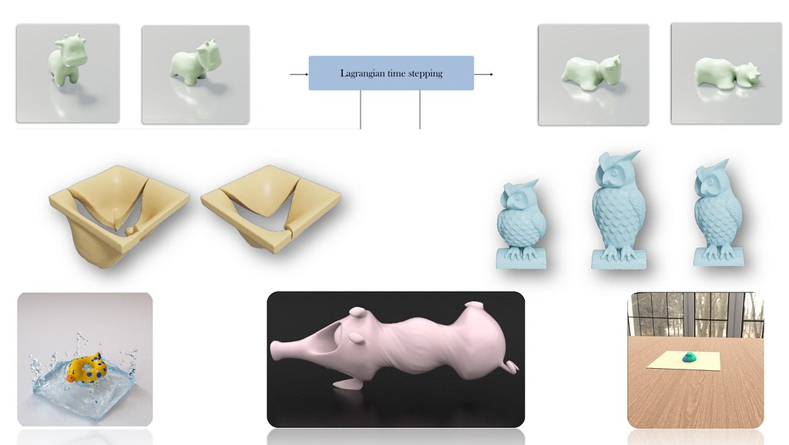
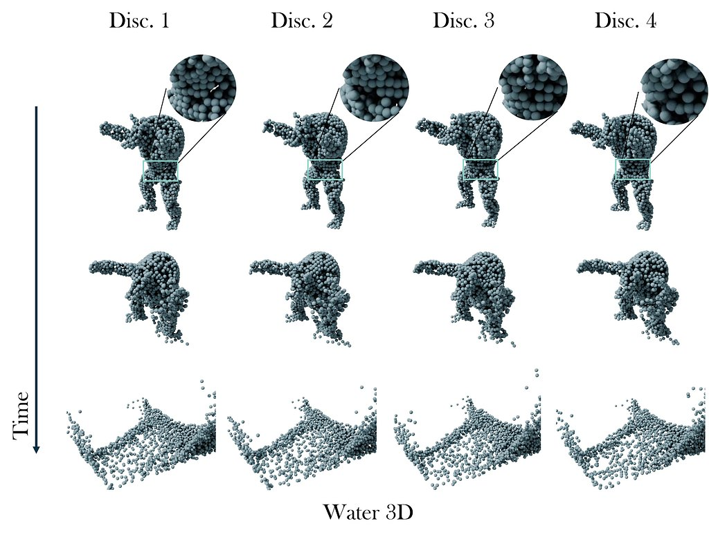

Learning Particle-Based Material Dynamics with Neural Operators and Model-Order Reduction
GIOROM: fast, localized physics by time-stepping in physical space.
First published on Medium. The figures on this page are new and run live in your browser.
- Lagrangian simulation
- Why scaling is hard
- Sampling in physical space
- The pipeline
- What's next
- References
GIOROM, or Geometry-Informed Reduced-Order Model, is a practical neural solver for Lagrangian physics. It enables high-fidelity simulation by (1) performing dimensionality reduction directly in physical space to preserve local geometric texture, (2) using continuous neural operators to remain entirely agnostic to explicit PDEs, and (3) achieving discretization convergence, so that a model trained on a sparse set of particles scales to millions of points at inference time.
High-fidelity physical simulators based on deep learning are becoming increasingly capable. They can model complex, chaotic behaviors like splashing fluids, collapsing sand, and tearing elastoplastic materials. As these solvers scale, they start to look less like isolated experiments and more like the foundational engines for digital twins and advanced computer graphics.

But having a highly accurate physical solver is not the same as having an efficient one. In practice, scaling Lagrangian simulations remains computationally paralyzing: purely data-driven graph networks introduce massive message-passing latency, hybrid models require restrictive explicit math, and traditional compression methods destroy the local, chaotic details that make physical simulations look real.
In this post, I describe the computational bottlenecks that motivated this project and our approach to address them: why traditional neural model-order reduction fails for highly dynamic materials like fluids, why dense graph operations are a developmental dead end for real-time speed, and what we changed to make fast, purely data-driven physics simulation practical.
This post discusses our work Learning Lagrangian Interaction Dynamics with Sampling-Based Model Order Reduction, published in the Transactions on Machine Learning Research (Viswanath et al. 2026), where we propose GIOROM.
What is a Lagrangian simulation?
Physical simulations can be approached from several angles, for example Eulerian grids or Lagrangian particles. For materials that undergo massive topological changes, like water, snow, or sand, Lagrangian methods such as Smoothed Particle Hydrodynamics (SPH) and the Material Point Method (MPM) are the standard.
Suppose you have a physical domain governed by a deformation map \(\phi(\cdot, t) : \Omega_0 \to \Omega_t\). A Lagrangian simulation represents this continuous material as a large collection of discrete material points \(X\). The map describes the motion of each point over time, \(x = \phi(X, t)\). Taking time derivatives gives the velocity and acceleration of every particle in the system:
$$v(X, t) = \frac{\partial \phi}{\partial t}(X, t), \qquad a(X, t) = \frac{\partial^2 \phi}{\partial t^2}(X, t).$$In practice, a neural surrogate for this system acts as a differentiable simulator. Given the current state (position and velocity) of millions of particles, the model predicts the inter-particle forces and outputs the updated accelerations for the next time step. The key point is that it must do this for every interacting point in space.
What "order" means in model-order reduction
Suppose there is a particle in free space. It can move along the \(x\), \(y\) and \(z\) directions, so it has 3 degrees of freedom. If there are two particles, and each can move independently, there are 6 degrees of freedom in total. If you think of a liquid as a continuous sheet of material, you can represent this sheet as a discrete set of independent particles when modeling it with MPM, SPH or another Lagrangian scheme. This is referred to as discretization. If you discretize the fluid into 2000 particles, it has 6000 degrees of freedom:
$$\underbrace{(x_1, x_2, \dots, x_N)}_{\text{state at time } t} \in \mathbb{R}^{N \cdot d}, \qquad N = 2000,\; d = 3 \;\Rightarrow\; 6000 \text{ degrees of freedom}.$$The order of the model is this number. Reducing it means describing the same motion with fewer numbers.

Why scaling Lagrangian dynamics is hard
If we want to avoid explicitly computing complex equations over millions of particles, we turn to neural networks. But scaling these neural physics solvers introduces three major pain points.
- Dense message passing creates crippling computational overhead. The most intuitive data-driven approach is a Graph Network Simulator, or GNS (Sanchez-Gonzalez et al. 2020). You treat every particle as a node and draw an edge between two particles if they are close enough to bump into each other. The network learns physics by passing latent messages across these edges. If you have one million particles, each with 50 neighbors, the network must compute 50 million edge interactions per time step. We get high accuracy, but the sheer volume of computation makes it prohibitively slow.
- Intrusive solvers require known, rigid equations. To bypass the graph bottleneck, researchers built hybrid frameworks, like NCLAW (Ma et al. 2023), that embed known constitutive laws directly into highly optimized neural PDE solvers. These are incredibly fast, but they are intrusive: they require explicit forms of the partial differential equations. If you are working in a purely data-driven regime where the governing equations are unknown or mathematically intractable, these models simply cannot run.
- Global reduced-order models destroy local geometric texture. The typical route to speed is model-order reduction, with approaches such as Continuous Reduced-Order Modeling, or CROM (Chen et al. 2022). CROM bypasses the spatial bottleneck by projecting the entire high-dimensional simulation into a tiny, low-dimensional global latent space, and can be viewed as NeRF for physics.
But there is a critical issue: forcing an entire physical system into a global latent space destroys local texture, particularly in chaotic fluid systems. In Lagrangian physics, highly localized, chaotic behaviors, like a sudden splash or a topological fracture, are the most important parts of the simulation. Because a global latent space loses its grip on these local dynamics, the decompressed simulations often end up looking like Play-Doh instead. Fluids visually glitch, cluster unnaturally, or overshoot and leak through their physical boundaries.
A locality-preserving fix: sampling in physical space
This is where GIOROM comes in. The main observation is that while tracking millions of points is computationally impossible for most applications, projecting them into a global abstract space may ruin the dynamic structures.
Our fix asks a simple question:
What if we reduce the order, but keep the particles in the real, physical 3D world?
Instead of compressing the simulation into a global latent vector, GIOROM samples a much smaller, sparsified subset of anchor particles from the physical domain. We then time-step only these anchor points forward. Because the simulation remains entirely in physical space, the model inherently preserves the local, chaotic geometric boundaries that global models destroy.

How GIOROM rewires the pipeline
To make this anchor-based time stepping work efficiently without explicit PDEs, we restructured how the network infers the future.
Ingredient 1
Autoregressive neural operators (offline phase)
How do we calculate the movement of these sparse anchor points? Rather than hardcoding classical math, GIOROM uses an autoregressive neural operator \(\mathcal{G}_\Theta\).
Traditional neural networks map fixed grid inputs to fixed outputs. Neural operators learn mappings between continuous function spaces (Kovachki et al. 2023). GIOROM looks at a short history window of the anchor particles' velocities, \(v_{t-w}\) to \(v_t\), and uses the neural operator to directly predict their upcoming accelerations \(a_t\), which an Euler step integrates:
$$\hat a_t = \mathcal{G}_\Theta\big(v_{t-w}, \dots, v_t\big), \qquad v_{t+1} = v_t + \Delta t\,\hat a_t, \qquad x_{t+1} = x_t + \Delta t\, v_{t+1}.$$Because it learns the continuous deformation operator from data, it is entirely PDE-agnostic.
Crucially, this achieves discretization convergence. You can train GIOROM on a low-resolution dataset of a few thousand particles, and deploy it to infer the physics of a hyper-dense simulation with millions of particles without retraining. The model understands the physics, not the pixel count.

Ingredient 2
Re-expansion via a kernel ROM (online phase)
Once the neural operator moves the sparse anchor points forward in time, how do we get the rest of the simulation back?
We introduce a learnable, online kernel-based ROM. Instead of acting like a rigid "unzipping" algorithm, the kernel ROM parametrizes the solution manifold. It reconstructs the full, high-resolution physical field by querying arbitrary spatial locations using the local geometric information of the evolved anchor particles. A field \(v\) known on the anchors is carried to any point \(x\) by a normalized kernel integral,
$$u(x, t) = \frac{\int_\Omega \psi(x, y)\, v(y, t)\, d\mu(y)}{\int_\Omega \psi(x, y)\, d\mu(y)} \;\approx\; \frac{\sum_{j} \psi(x, y_j)\, v(y_j, t)}{\sum_{j} \psi(x, y_j)},$$where the sum runs over the anchors \(y_j\) near \(x\) and the kernel \(\psi\) is learned. This decoupling of the reduced-space prediction from the full-space inference means you can render the final simulation at whatever resolution you need, independently of the physics calculation.
What's next?

There are many ways to extend this approach. While GIOROM breaks the dimensionality bottleneck and preserves local geometry, it remains specific to individual materials. It generalizes to new trajectories and varying spatial resolutions, but it behaves like a neural field with respect to the material: a model trained on sand must be retrained to understand water.
The next big step for the scientific machine learning community is to move toward foundation models for physical systems. We need architectures capable of handling arbitrary continuum materials that can operate seamlessly in both data-driven and PDE-dependent regimes. Purely data-driven regimes may not suffice. Consider for example this work (Jain et al. 2024), which accelerates fluid simulation by replacing its most expensive step with a neural surrogate. This keeps the physical grounding while replacing expensive parts of the solver pipeline, which is much better than introducing training and dataset biases into a data-driven physics simulator.
Similarly, future models will likely need to sample and compute dynamics intelligently in both physical space and a reduced-order latent space. Reduced-order models such as CROM (Chen et al. 2022) and LiCROM (Chang et al. 2023) define the physics in the latent space, which means they can be more accurate than a purely data-driven simulation.
We view GIOROM as an initial iteration toward a generation of solvers that combines neural operators, neural fields and reduced-order models. For more details, read the full paper or visit the repository.
References
- Y. Chang, P. Y. Chen, Z. Wang, M. M. Chiaramonte, K. Carlberg and E. Grinspun (2023). LiCROM: Linear-subspace continuous reduced order modeling with neural fields. SIGGRAPH Asia 2023 Conference Papers, 1–12.
- P. Y. Chen, J. Xiang, D. H. Cho, Y. Chang, G. A. Pershing, H. T. Maia, M. M. Chiaramonte, K. Carlberg and E. Grinspun (2022). CROM: Continuous reduced-order modeling of PDEs using implicit neural representations. arXiv:2206.02607.
- S. Clavet, P. Beaudoin and P. Poulin (2005). Particle-based viscoelastic fluid simulation. ACM SIGGRAPH/Eurographics Symposium on Computer Animation.
- P. Jain, Z. Qu, P. Y. Chen and O. Stein (2024). Neural Monte Carlo Fluid Simulation. SIGGRAPH 2024 Conference Papers.
- N. Kovachki, Z. Li, B. Liu, K. Azizzadenesheli, K. Bhattacharya, A. Stuart and A. Anandkumar (2023). Neural operator: Learning maps between function spaces with applications to PDEs. Journal of Machine Learning Research 24(89):1–97.
- P. Ma, P. Y. Chen, B. Deng, J. B. Tenenbaum, T. Du, C. Gan and W. Matusik (2023). Learning neural constitutive laws from motion observations for generalizable PDE dynamics. International Conference on Machine Learning, 23279–23300.
- J. J. Monaghan (1992). Smoothed particle hydrodynamics. Annual Review of Astronomy and Astrophysics 30:543–574.
- A. Sanchez-Gonzalez, J. Godwin, T. Pfaff, R. Ying, J. Leskovec and P. Battaglia (2020). Learning to simulate complex physics with graph networks. International Conference on Machine Learning.
- D. Sulsky, Z. Chen and H. L. Schreyer (1994). A particle method for history-dependent materials. Computer Methods in Applied Mechanics and Engineering 118(1–2):179–196.
- H. Viswanath, Y. Chang, A. Panas, J. Berner, P. Y. Chen and A. Bera (2026). Learning Lagrangian Interaction Dynamics with Sampling-Based Model Order Reduction. Transactions on Machine Learning Research. arXiv:2407.03925.